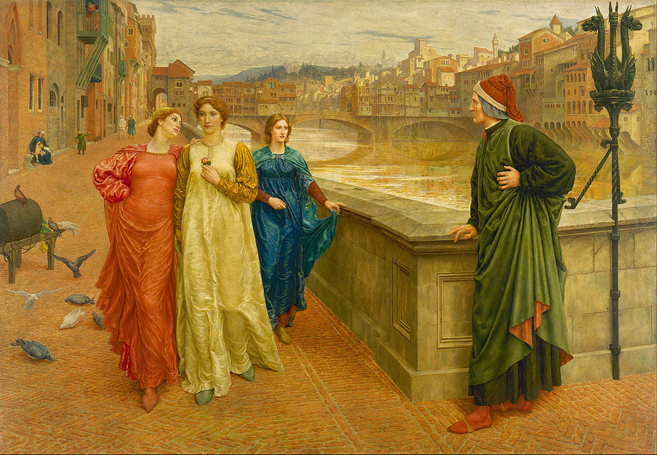

| LA VITA | |||
|
|||
| LE OPERE | |||
|

|  |
| Dante and Beatrice, dalla Vita Nuova, di Henry Holiday (1883) |
La Vita Nuova La Vita Nuova è stata la prima opera di Dante Alighieri, un'opera della giovinezza, scritta tra il 1292 e il 1293, composta da 35 poemi e di 42 capitoli in prosa. Si tratta di una parte delle memorie di Dante che segna l'inizio, nella letteratura europea, del filone di storie personali raccontate in volgare senza l'interposizione di un protagonista o di un narratore fittizio. Il titolo non significa la vita "appena nata", bensì la vita "rinnovata", illuminata dall'amore. L'opera racconta quindi la storia della giovinezza di Dante, illuminata dal suo amore meraviglioso per Beatrice (Bice di Folco Portinari, sposa di Simone de' Bardi), e la rivelazione fondamentale che tale amore gli manifesta all'inizio della sua esistenza. Dante non aveva ancora 9 anni quando si innamorò di colei che amerà poi per l'eternità e che allora era solo una bambina di 8 anni. Occorre precisare subito che Dante incontrò Beatrice due sole volte, la prima all'età di 9 anni e la seconda 9 anni più tardi; entrambi gli incontri furono caratterizzati dall'ostinato mutismo di lei e dagli insuperabili ostacoli che separavano i due giovani. Non vi fu mai alcun rapporto diretto né dialogo tra i due. Il loro unico scambio di parole fu "lo suo dolcissimo salutare", il dolce saluto che Beatrice rivolse a Dante in occasione del secondo incontro (a 18 anni) e che gli fece "vedere tutti li termini de la beatitudine". Dopo questo incontro, Dante fece un misterioso sogno, descritto in un sonetto dal colorito anzitempo surrealista, e la sua passione aumentò a tal punto da colpire alcuni amici e risvegliare la loro curiosità. Volendo nascondere il proprio sentimento a tutti coloro che lo circondavano, Dante fece credere di essersi innamorato successivamente di altre due donne (figure di "donna schermo"), fino al giorno in cui Beatrice, offesa da tale simulazione, gli negò il proprio saluto. La sofferenza causatagli da tale rifiuto da parte della propria dama gli fece decidere di votarsi interamente alle lodi della gentilissima, inaugurando con la prima canzone inclusa nella Vita Nuova il "dolce stil novo" che verrà rivendicato come punto di partenza della poesia lirica e che contraddistinguerà tutta la sua generazione. Egli rinunciò a conquistare la propria dama e imparò a considerare la passione che provava per lei come fine a se stessa. La sua poesia doveva consacrarsi esclusivamente a tessere le lodi dell'essere amato. Si ritrova quindi, ben prima di Stendhal, il "processo di cristallizzazione" posto al cuore dell'autenticità amorosa. Il sentimento amoroso non concretizzato appariva come una rivelazione che, conducendo al superamento e all'oblio di sé, diveniva fonte di beatitudine. La devozione amorosa veniva percepita come una condizione di felicità raggiunta, come effetto di una passione resa gioiosa e giustificata tramite la liberazione da tutto ciò che non dipendeva da essa. Non vi era più bisogno di un amore corrisposto né di un cortese consenso. Sette anni più tardi, Beatrice morì a 25 anni, senza avergli mai rivolto la parola e senza aver ricevuto da lui la minima confidenza. Questa morte prematura fece sprofondare Dante in uno stato di grande dolore e abbattimento; due anni più tardi, tale sentimento lo spinse a scrivere la Vita Nuova. Se Beatrice non fosse morta, avrebbe comunque ispirato a Dante la Vita Nuova, e gli avrebbe in seguito fatto da "luce guida" per scrivere la Divina Commedia? Fu la sua qualità di "assente" che senza dubbio affascinò Dante. Egli confessò di aver visto Beatrice solo in tre rare occasioni, e da lontano, sempre circondata da altre donne; un giorno, in cui non si aspettava di incontrarla, tutto ciò che riuscì a fare fu dileguarsi. Dante tradusse quindi in versi il miracolo operato in lui da Beatrice. Costei acquisì le sembianze di un angelo inviato dal Cielo sulla terra per salvare coloro che avrebbero avuto la fortuna di conoscerla, divenendo una sorta di mediatrice tra l'esperienza terrena e il Cielo. È la storia dell'avventura imperfetta e sempre "minacciata" di due esseri umani che cercano di comprendersi e di ritrovarsi: la separazione diviene la condizione imprescindibile del loro amore. Lo stesso tema ispirerà molti autori italiani successivi a Dante, ad esempio (tanto per citarne uno) Manzoni nei suoi Promessi sposi. La Vita Nuova è quindi la prima creazione autobiografica moderna che tuttavia prescinde dagli eventi reali e dal pittoresco per offrire solo la storia esemplare di un amore per Beatrice visto nei suoi effetti sulla coscienza di Dante. |